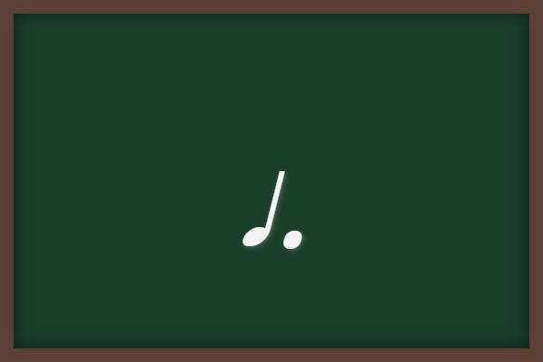
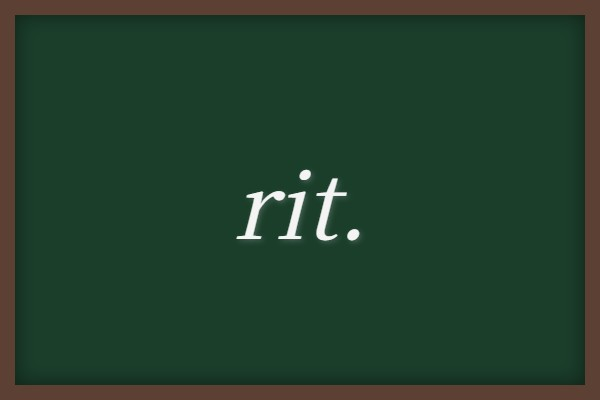

歌唱曲② (浜辺の歌・赤とんぼ・夢の世界を)
中学音楽の授業や定期テストで超頻出の日本の代表的な歌曲「浜辺の歌」「赤とんぼ」と、合唱コンクールや授業で人気の混声合唱曲「夢の世界を」について、テストに出る要点を整理しました。歌詞の言葉の意味や、大切な楽典の記号をしっかりとマスターしましょう！
1. 「浜辺の歌」の要点整理
美しい浜辺の情景を歌った、成田為三の代表作です。
① 基本データ
- 作詞：林古渓（はやしこけい）
- 作曲：成田為三（なりたためぞう）（秋田県出身の作曲家です）
- 拍子：8分の6拍子（8分音符を1拍とし、1小節に6拍入る拍子）
- 調：ヘ長調（へちょうじょう）（フラット「♭」がシの音に1つつく調）
- 形式：二部形式（大楽節が2つ［A-B］で構成される形式。※本曲は前奏ののち、A-A'-B-A'の構造をとる二部形式です）
② 歌詞の意味（古典表現・記述テスト対策！）
歌詞に使われている言葉の意味を問う問題は非常に多く出題されます。
- あした ➔ 朝（「あした浜辺をさまよえば」は翌日ではなく「朝に」という意味です）
- ゆうべ ➔ 夕方（昨晩ではなく「夕暮れ時に」という意味です）
- もとおれば ➔ 歩きまわれば（行ったり来たり歩くという意味です）
③ 登場する音楽記号

付点4分音符
4分音符の「1.5倍」の長さ（8分音符3つ分）

クレシェンド（＜）
意味：だんだん強く
2. 「赤とんぼ」の要点整理
幼い頃の夕焼けと子守娘の思い出を美しく歌った童謡・唱歌。
① 基本データ
- 作詞：三木露風（みきろふう）
- 作曲：山田耕筰（やまだこうさく）（「待ちぼうけ」なども手がけた日本歌曲の開拓者）
- 拍子：4分の3拍子（4分音符を1拍とし、1小節に3拍入る拍子）
- 調：変ホ長調（へんほちょうじょう）（フラット「♭」が3つつく調）
- 形式：一部形式（8小節という1つの大楽節だけで完結する最もシンプルな形式）
② 歌詞の意味（テスト超頻出！）
- 姐や（ねえや） ➔ 子守娘（自分のお姉さんではなく、幼い頃に自分をおぶって面倒を見てくれた奉公人の少女のことです）
- 負われて ➔ 背負われて（「おんぶされて」という意味）
- お里のたより ➔ 故郷からの手紙（姐やが実家へ嫁いだあと、手紙が来なくなった寂しさを歌っています）
③ 登場する音楽記号

ピアノ (p)
意味：弱く

デクレシェンド（＞）
意味：だんだん弱く（decresc. とも書かれます）
3. 「夢の世界を」の要点整理
中学生の合唱曲として非常にポピュラーな、前向きで美しい合唱曲です。
① 基本データ
- 作詞：芙龍明子（ふりゅうあきこ）
- 作曲：橋本祥路（はしもとしょうじ）（「時の旅人」なども作曲した、中学合唱曲の人気作曲家）
- 拍子：8分の6拍子
- 調：ハ長調（はちょうじょう）
- 合唱形態：混声三部合唱（最初は全員で同じ旋律を歌う「斉唱（せいしょう）」から始まり、後半に3つのパートに分かれます）
- ソプラノ：女声の高い声のパート
- アルト：女声の低い声のパート
- 男声（テノール/バス）：男性パート（中学校では1つにまとまっていることが多いです）
② 登場する音楽用語・記号（記述テスト必出！）
テンポや音の表情を指示する、以下の重要な記号の意味を漢字でしっかり書けるようにしましょう！

リタルダンド (rit.)
意味：だんだん遅く

ア・テンポ (a tempo)
意味：もとの速さで（rit.で遅くなった後に元の速さに戻します）

音符の上に横棒（ー）で示されるテヌート（tenuto）：意味は「その音の長さを十分に保って」演奏する。
🔥 定期テスト対策・暗記のコツ
① 歌曲の作詞者・作曲者の組み合わせ
・「浜辺の歌」➔ 林古渓 / 成田為三
・「赤とんぼ」➔ 三木露風 / 山田耕筰
・「夢の世界を」➔ 芙龍明子 / 橋本祥路
テストでは作詞・作曲をあべこべに書くミスが多いので、セットで繰り返し唱えて覚えましょう！
② 歌詞の古語的な意味
特に「浜辺の歌」の「あした（＝朝）」「ゆうべ（＝夕方）」や、「赤とんぼ」の「姐や（＝子守娘）」は国語の問題のようですが、音楽テストで超高確率で問われます！
③ テンポ指示記号のセット
「夢の世界を」の後半の盛り上がりでは、rit. と a tempo がセットで登場します。それぞれの正しい読みとスペル、および意味（だんだん遅く ➔ もとの速さで）を整理しておきましょう！